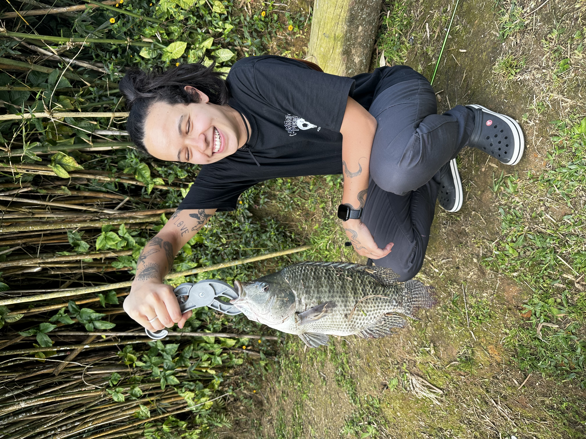
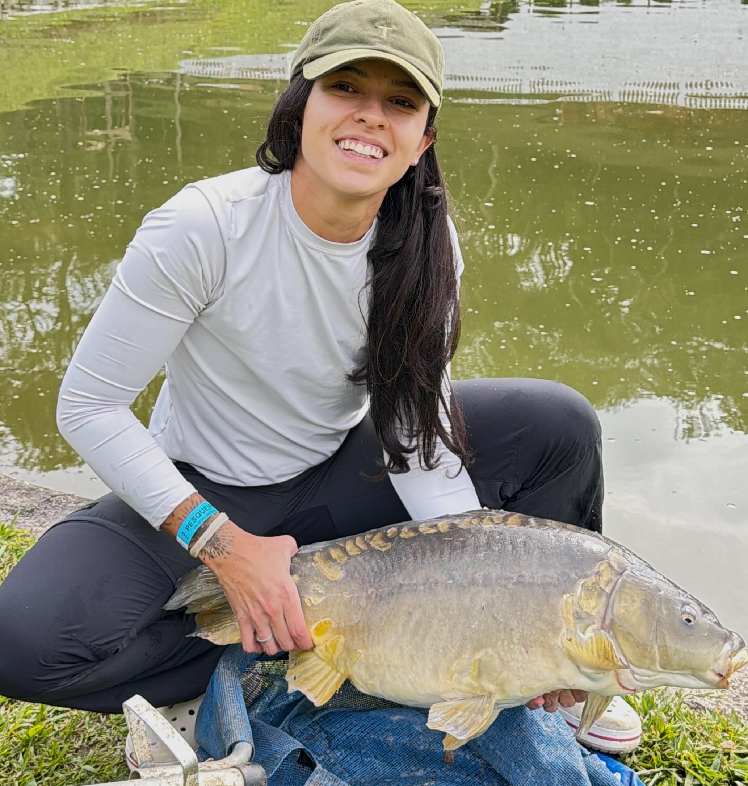
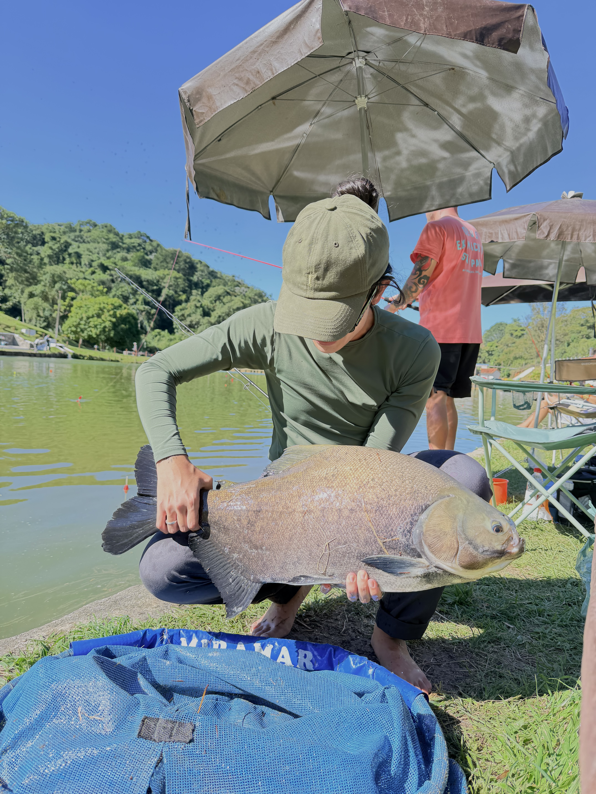
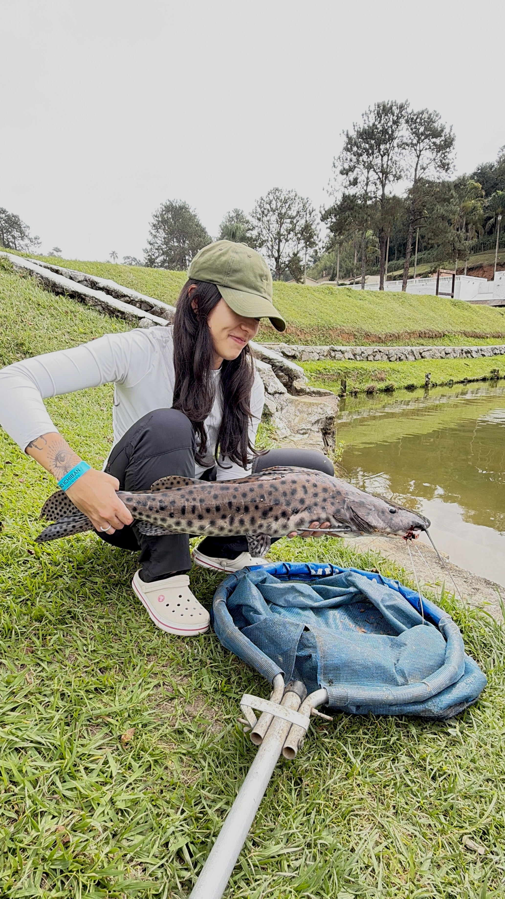
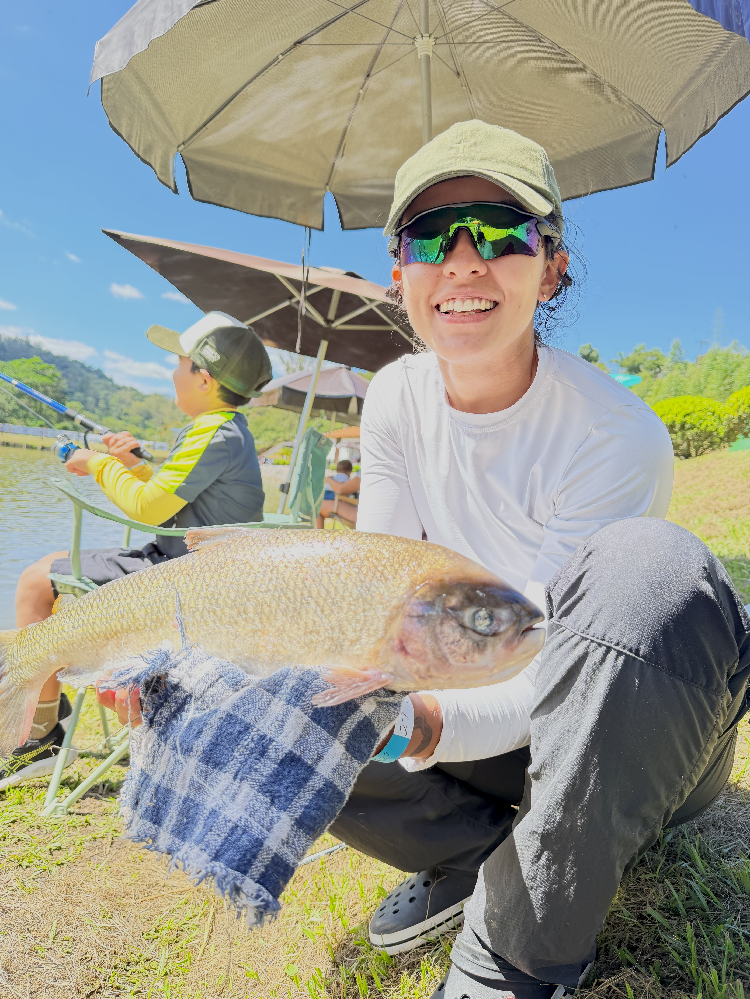
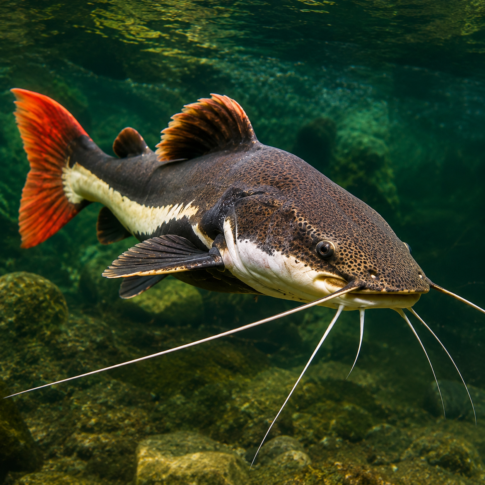
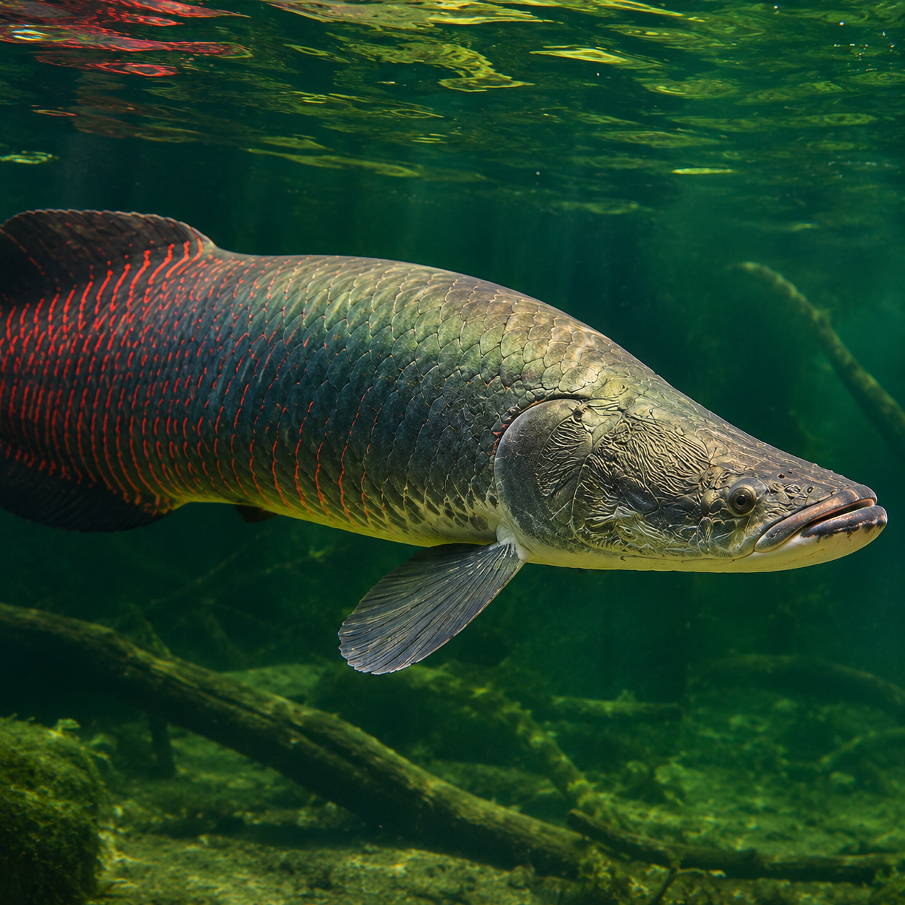

GUIA 01 - EDIÇÃO PESQUEIROS
Espécies de Peixes
Conheça sete peixes encontrados nos pesqueiros e descubra um pouco sobre cada um.

01
Tilápia
Um dos peixes mais comuns nos pesqueiros.
Características
A tilápia é muito comum nos pesqueiros. Tem escamas e uma cor que costuma variar entre cinza e verde.
Alimentação
Come algas, pequenos animais e plantas. Na pesca, costuma aceitar massa, ração e minhoca.
Comportamento
Gosta de áreas mais rasas e próximas da vegetação. Em lugares movimentados, pode ficar mais desconfiada.
Curiosidade
A fêmea protege os ovos e os filhotes dentro da boca nos primeiros dias de vida.

02
Carpa
Conhecida pela força na hora da fisgada.
Características
A carpa tem corpo forte, escamas grandes e pode apresentar cores diferentes, dependendo da variedade.
Alimentação
Come larvas, sementes e plantas. Milho, massa e ração são iscas bastante usadas.
Comportamento
Costuma procurar comida no fundo do lago e pode se assustar com movimentos bruscos.
Curiosidade
A carpa comum tem pequenos “bigodes”, chamados barbilhões, que ajudam a encontrar alimento.

03
Tambaqui
Um peixe forte que veio da Amazônia.
Características
O tambaqui é um peixe amazônico de corpo arredondado e mandíbula forte. Pode crescer bastante.
Alimentação
Na natureza, come frutos, sementes e pequenos animais. Nos pesqueiros, pode aceitar frutas, massa e ração.
Comportamento
É forte e pode dar boas arrancadas quando é fisgado.
Curiosidade
Seus dentes são adaptados para quebrar frutos e sementes, que fazem parte da sua alimentação.

04
Pintado
Um peixe de couro que gosta do fundo.
Características
O pintado tem corpo comprido, pele sem escamas e manchas escuras que ajudam a reconhecê-lo.
Alimentação
Alimenta-se principalmente de outros peixes. Por isso, iscas naturais podem funcionar, quando permitidas.
Comportamento
Costuma ficar perto do fundo e pode ser mais ativo quando há pouca luz.
Curiosidade
Os barbilhões, parecidos com bigodes, ajudam a perceber o ambiente e encontrar alimento.

05
Matrinxã
Rápida e conhecida pelos saltos.
Características
A matrinxã tem corpo alongado, coloração prateada e é conhecida pela agilidade.
Alimentação
Come frutos, sementes, insetos e outros pequenos alimentos. A isca depende das regras do pesqueiro.
Comportamento
Nada rápido e pode saltar fora da água quando é fisgada.
Curiosidade
Os saltos são uma das características que mais chamam atenção durante a pesca da matrinxã.

06
Pirarara
Uma das grandes atrações dos pesqueiros.
Características
A pirarara é um peixe de couro grande, com cabeça larga e nadadeiras em tons avermelhados.
Alimentação
Come peixes, crustáceos e também alguns frutos. Nos pesqueiros, costuma ser pescada com iscas naturais.
Comportamento
Fica bastante próxima do fundo e tem muita força. Por isso, precisa de equipamento adequado.
Curiosidade
Seu nome está ligado à cor avermelhada das nadadeiras.

07
Pirarucu
Um gigante das águas brasileiras.
Características
O pirarucu é um dos maiores peixes de água doce do mundo. Tem corpo comprido e escamas grandes.
Alimentação
Alimenta-se principalmente de peixes e outros animais aquáticos. Nos pesqueiros, a alimentação segue o manejo do local.
Comportamento
É muito forte e sobe à superfície de tempos em tempos para respirar.
Curiosidade
Diferente da maioria dos peixes, o pirarucu precisa respirar ar fora da água para sobreviver.